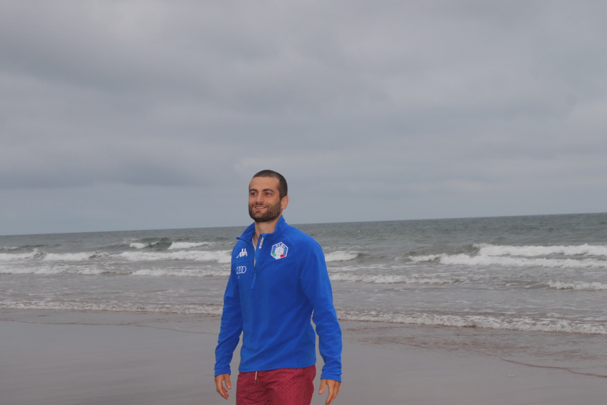

In my research I investigate questions related to supersingular elliptic curves, their endomorphism ring and associated isogeny graphs. I am particularly interested in: cryptography, elliptic curves, abelian varieties, algorithms for number theory, class field theory and modular curves.
Below you can find a list of ongoing projects I am involved in:
With Maher Mamah, Youcef Mokrani, Bruno Sterner, Nic Swanson
With David Kohel
With Andrea Basso, Jolijn Cottaar, Yi-Fu Lai, Jeanne Laflamme, Tanja Lange, Jason T.~LeGrow, Ha Tran
In my research I investigate questions related to supersingular elliptic curves, their endomorphism ring and associated isogeny graphs. I am particularly interested in: cryptography, elliptic curves, abelian varieties, algorithms for number theory, class field theory and modular curves.
Below you can find a list of ongoing projects I am involved in:
With Maher Mamah, Youcef Mokrani, Bruno Sterner and Nic Swanson.
With David Kohel.
With Andrea Basso, Jolijn Cottaar, Yi-Fu Lai, Jeanne Laflamme, Tanja Lange, Jason T.~LeGrow and Ha Tran.

Supervisor: Prof. David Kohel.
Defense: November 18, 2022. Aix-Marseille Université, Marseille (FR).
> manuscript
Supervisor: Prof. Fabrizio Andreatta.
Defense: July 16, 2018. Universität Regensburg, Regensburg (DE).
> manuscript
PhD thesis.
Supervisor: Prof. David Kohel.
Defense: November 18, 2022. Aix-Marseille Université, Marseille (FR).
MSc thesis.
Supervisor: Prof. Fabrizio Andreatta.
Defense: July 16, 2018. Universität Regensburg, Regensburg (DE).
